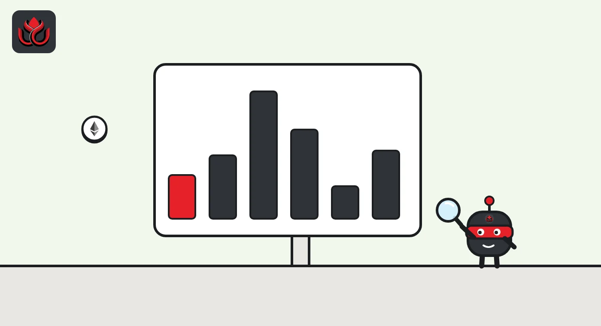

FinCEN cuts MEXC off from U.S. banks over $16.7 billion in likely illicit flows
The U.S. Treasury's FinCEN ordered U.S. financial institutions on November 6, 2026, to stop sending funds to or receiving funds from MEXC Global. The ban starts 30 days after the order runs in the Federal Register.
Key points
- FinCEN named MEXC Global a financial institution "of primary money laundering concern in connection with Russian illicit finance" under section 9714(a) of the Combating Russian Money Laundering Act.
- The order bars covered U.S. financial institutions from any transmittal of funds, including crypto, to or from MEXC Global. It takes effect 30 days after Federal Register publication.
- FinCEN assesses that MEXC Global facilitated at least $16.7 billion in likely illicit activity since May 2021. Treasury's release rounds this to at least $16 billion.
- The order cites about $129 million with Garantex, $4.1 million with Grinex, almost $200 million tied to the A7A5 token, and over $1 billion in direct trades with more than 40 Iranian exchanges.
- MEXC is not on OFAC's sanctions list. The order targets U.S. institutions' transfers, and MEXC's U.S. affiliates, if any, are outside its scope.
What FinCEN ordered
FinCEN, the Treasury bureau that polices money laundering, announced the action on November 6, 2026, as part of what Treasury calls Operation Economic Outcast (FinCEN release). The order says a covered U.S. financial institution "is prohibited from engaging in any transmittal of funds from or to MEXC Global."
"Transmittal of funds" covers both sending and receiving, and the order says that includes convertible virtual currency. It applies to the Seychelles-registered exchange and its branches, subsidiaries, offices and successors outside the United States, including affiliates the order lists in Estonia, Switzerland and the United Kingdom.
There is no wind-down period. For crypto that arrives from MEXC Global, FinCEN lets U.S. institutions use their own risk procedures, for example when returning funds to the exchange would break those procedures. Willful violations can bring civil or criminal penalties.
The numbers in the order
FinCEN says MEXC Global handled more than $1 billion in daily transactions as of June 2026, held about $5 billion in reserve assets and listed over 3,000 crypto and tokenized assets. It ranks the exchange among the 20 largest by trading volume.
Against that, FinCEN assesses at least $16.7 billion in likely illicit activity since May 2021. The order breaks out:
- Russia: nearly $1.5 billion in direct and indirect exposure to Russian sanctions evasion, about $129 million with Garantex and $4.1 million with Grinex (still active as of June 2026), at least $26 million with the A7 Network and almost $200 million tied to the A7A5 token.
- Iran: about $1.87 billion in exposure, including over $1 billion in direct transactions with more than 40 Iranian crypto exchanges, and about $22 million tied to the Central Bank of Iran and the IRGC-Qods Force.
- North Korea: about $350,000 received by a sanctioned DPRK money launderer between June and September 2025.
- Cybercrime: at least $1.99 billion from illicit cyber actors and over $37.9 million in suspected ransomware payments.

What it means for MEXC users
The order is not an OFAC sanctions listing, so it does not freeze MEXC accounts worldwide. It cuts the link between MEXC Global and U.S. banks, payment firms and other covered institutions, which matters for anyone moving dollars or crypto between those firms and MEXC.
MEXC's own token, MX, traded at $1.51 at 9:33 p.m. ET on November 6, down 3.3% over 24 hours, according to CoinGecko. CoinGecko showed about 12,979 BTC, roughly $986 million, in 24-hour spot volume on MEXC at the same time.
We did not find a statement from MEXC on its own website about the order at the time of writing. We will add one when it is posted.
LC Insight analysis
This section is our reading of the facts above, not a statement of fact.
- The 30-day clock starts only when the order appears in the Federal Register, so the effective date is not fixed yet. U.S.-facing payment firms are likely to start cutting ties before then.
- This is FinCEN's first order of this kind against a top-20 exchange. The size of the figures, and the fact that the activity continued into 2026, suggest regulators now treat weak exchange controls as a sanctions problem, not only a compliance one.
What's next
- The Federal Register publication date, which sets the effective date
- Any official MEXC statement
- MEXC deposit and withdrawal flows on block explorers and on-chain trackers in the coming days
Disclaimer. This article is based on public information and the sources listed below as of the update time shown. It is for information only and is not investment, legal or tax advice. Figures may change as companies and authorities publish new data.
Sources
- FinCEN, "Operation Economic Outcast Severs MEXC Global's Access to the U.S. Financial System" (November 6, 2026)
- FinCEN, Order: Imposition of Special Measure Prohibiting the Transmittal of Funds Involving MEXC Global (section 9714)
- FinCEN, Federal Register notice page for the MEXC order (release date November 6, 2026)
- CoinGecko, MX Token price and MEXC exchange volume (read November 6, 2026, 9:33 p.m. ET)